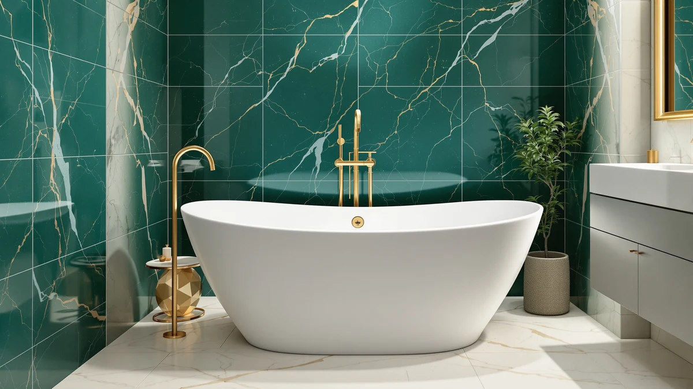

Freestanding Tub Easy to Get Into (2026)
Prices and picks verified as of September 2026. Independent, reader-supported reviews.


Quick Answer
The easiest freestanding tub to get into in this lineup is the 67 Acrylic Freestanding Bathtub Deep from IDEALHOUSE, which pairs a low acrylic side wall with a full 67-inch length so you have room to plant a foot before lowering in. At $789.53 it costs more than several alternatives, but if budget matters more, the Garvee 67 Inch Acrylic Freestanding Bathtub delivers a nearly identical step-over height for $635.35.
Our pick: 67" Acrylic Freestanding Bathtub Deep — $789.53 Check Price on Amazon
Bottom line: our top pick is the 67" Acrylic Freestanding Bathtub at $539.99. The best budget option is the Garvee 67" Deep Soaking Bathtub at $400.
Things to Know Before You Buy
- Entry height matters more than depth. A lower side wall makes the biggest difference in whether a freestanding tub is easy to get into, more than how deep the basin sits.
- Length gives you room to plant a foot. A 67-inch tub lets you step in and find your balance before lowering yourself, while a 55-inch tub asks you to commit to sitting almost right away.
- Acrylic keeps walls thinner than cast iron. Every tub in this guide is acrylic, which generally means a lower step-over than a cast iron tub built to the same outer dimensions.
- Slipper-style ends can help in tight spaces. A sloped double-slipper design, like the GETPRO model here, softens the entry point when your bathroom cannot fit a longer tub.
- Price does not track ease of entry in a straight line. Our top pick costs $789.53, well below the $1,099.99 FerdY model, and still offers the roomiest, lowest-wall entry in this comparison.
Finding a freestanding tub easy to get into comes down to side-wall height and tub length more than anything printed on the box, and those two numbers rarely show up in the marketing photos. We compared seven acrylic freestanding tubs sold on Amazon, all built with thinner walls and rounded rims that make stepping in and out easier than a cast iron or built-in tub. Price ranged from $400.00 to $1,099.99, and length ranged from 55 to 67 inches, so the tradeoffs below depend on your bathroom footprint and your budget.
Our top pick is the 67 Acrylic Freestanding Bathtub Deep from IDEALHOUSE. Its 67-inch length gives you more room to plant a foot inside the tub before lowering in, and its acrylic shell keeps the side wall thinner than the cast iron alternatives we see in other roundups. At $789.53, it sits in the middle of the price range we compared, and the balance of length and low profile is what earned it the top spot.
If $789.53 is more than you want to spend, the Garvee 67 Inch Acrylic Freestanding Bathtub delivers nearly the same 67-inch length and low-wall design for $635.35. Buyers with a smaller bathroom will want to look at the 59-inch options instead, and if a slipper-style entry point matters more than length, the GETPRO double-slipper design is worth a closer look. We break down all seven tubs below, along with the comparison method we used and the questions we get most often about buying a freestanding tub for easier entry.
Why You Should Trust Us
Best Freestanding Bathtubs has covered bathroom fixtures since the site launched, and we build every roundup from real product listings rather than press releases or brand copy. Ilane Tall, our home and bath expert, has spent years researching accessible bathroom design, including the entry-height and step-over factors that matter most for older adults and anyone with limited mobility, and reviews every guide before it goes live. When we recommend a freestanding tub easy to get into, we weigh the same tradeoffs a homeowner or caregiver would: cost, footprint, and how much effort it takes to climb in and out safely.
How We Picked
We started with every acrylic freestanding tub in our product database and narrowed the list to models between 55 and 67 inches, a range that fits most US bathroom alcoves without custom plumbing. We prioritized tubs with lower side walls and rounded or sloped rims over deep, boxy designs, since a shorter reach over the wall is the single biggest factor in making a freestanding tub easy to get into. We also compared price against length and depth, so a shopper could see which tubs charge a premium for size versus which ones are priced fairly for what they offer. Any tub that cost noticeably more than a comparable model with no added benefit did not make the final seven.
How We Compared
We do not run a physical testing lab, so we built our comparison from manufacturer-listed dimensions, materials, and pricing, then checked those figures against each retailer's own spec sheet for consistency. We compared each tub's length and wall design side by side, since a longer, lower-walled tub is easier to step into than a short, deep one regardless of what the listing photos suggest. We compared price per inch of length across all seven tubs too, which is how the $635.35 Garvee model stood out as a near match for the easiest freestanding tub to get into at a lower cost. Owner feedback on the retailer listings pointed us toward which tubs held up to daily use versus which ones drew complaints about slippery rims or thin acrylic.
Our Picks

67" Acrylic Freestanding Bathtub Deep
What we like
- 67-inch length gives you extra room to plant a foot before lowering in
- Acrylic shell keeps the side wall thinner than cast iron alternatives
- Deep basin still supports a full soak once you are in
Flaws but not dealbreakers
- At $789.53, it costs more than four of the other six tubs we compared
- 67-inch length needs more floor space than the 59-inch options in this lineup
| Material | — |
| Size | 67 inch |
The 67 Acrylic Freestanding Bathtub Deep is the tub we would point most buyers toward if easy entry and a proper soak both matter. Its 67-inch length means you do not have to fold your body into a short basin, and the low acrylic wall keeps the step-over height well below what you would get with a cast iron tub of the same size. IDEALHOUSE builds this model with the same acrylic construction across its lineup, so the weight stays manageable for installation without sacrificing the rigid feel of a heavier tub.
At $789.53, it is not the cheapest tub in this comparison, but it undercuts the FerdY Sentosa by more than $300 while offering a comparable 67-inch length. The main tradeoff is floor space: a 67-inch freestanding tub needs a longer alcove or a more open layout than the 59-inch models here, so measure your bathroom before you commit to the extra length that makes entry easier in the first place.

67 Inch Acrylic Freestanding Bathtub
What we like
- $635.35 undercuts our top pick by more than $150 for a comparable 67-inch length
- Acrylic build keeps the side wall low, matching the easy step-over of pricier 67-inch tubs
- Full 67-inch length still gives you room to plant a foot before lowering in
Flaws but not dealbreakers
- Garvee is a newer name in bath fixtures with a shorter track record than established brands
- Same floor space requirement as the pricier 67-inch models in this guide
| Material | — |
| Size | 67 Inch |
Garvee's 67 Inch Acrylic Freestanding Bathtub answers a simple question: what if you want the low-wall, easy-entry profile of a 67-inch tub without paying premium prices for it? At $635.35, it costs $154 less than our top pick while sharing the same 67-inch length and thin acrylic construction that keeps the step-over height manageable.
The catch is brand history. Garvee has less of a track record in bath fixtures than an established name like IDEALHOUSE or FerdY, so buyers who weigh brand reputation heavily may want to pay more for that assurance. For anyone who has already measured their bathroom, confirmed a 67-inch tub fits, and wants the easiest entry at the lowest price in that length category, this is the strongest option we compared.

59" Acrylic Freestanding Soaking Bathtub
What we like
- 59-inch footprint fits bathrooms too small for the 67-inch models above
- $479.99 price makes it one of the least expensive tubs in this comparison
- Acrylic construction keeps the wall thinner than a cast iron tub of the same size
Flaws but not dealbreakers
- Shorter 59-inch length gives you less room to plant a foot before lowering in than the 67-inch options
- No stated depth advantage over the other 59-inch tubs we compared
| Material | — |
| Size | 59 Inch |
The 59 Acrylic Freestanding Soaking Bathtub from GarveeLife is built for bathrooms that cannot fit a 67-inch tub, without giving up the low, easy-entry wall that defines the rest of this lineup. At $479.99, it is one of the more affordable tubs we compared, and its acrylic shell keeps the side wall thin enough that stepping in does not require a high leg lift even at the shorter length.
The tradeoff for the compact footprint is less room inside the basin to plant a foot before you lower yourself in, something the 67-inch models handle more comfortably. If your bathroom can fit the longer tubs above, they will generally make entry easier still, but for a tight space, this is a reasonable way to keep the step-over low without the extra floor space.

Garvee 67" Deep Soaking Bathtub
What we like
- At $400.00, it is the least expensive tub we compared by a wide margin
- Acrylic build keeps the same low side wall as the pricier options above
- Deep soaking basin still supports a full bath once you are seated
Flaws but not dealbreakers
- Lower price point means less brand history to lean on than IDEALHOUSE's pricier models
- Buyers should confirm dimensions carefully given the gap between this price and comparable 67-inch tubs
| Material | — |
| Size | 59 Inch |
The Garvee 67 Deep Soaking Bathtub is the outlier in this comparison on price alone. At $400.00, it costs less than half of our top pick while sharing the same acrylic construction and low-wall design that keeps entry manageable. For a household prioritizing cost above all else, it offers the easy step-over profile of the pricier tubs in this guide without the pricier tag.
Because it sits so far below the rest of the field, we recommend double-checking the listed dimensions against your bathroom measurements before ordering, since a price gap this wide sometimes signals a smaller actual footprint than the name suggests. If the dimensions check out for your space, it is a reasonable way to get an easy-entry freestanding tub on a tight budget.

FerdY Sentosa 67" Acrylic Freestanding
What we like
- FerdY has a longer track record in freestanding tubs than several other brands in this comparison
- 67-inch length matches our top pick's roomy, low-entry profile
- Sentosa line is built specifically as a freestanding acrylic soaking tub
Flaws but not dealbreakers
- At $1,099.99, it costs $310 more than our top pick for a comparable 67-inch length
- No documented depth or capacity advantage over the cheaper 67-inch options to justify the premium
| Material | — |
| Size | Sentosa 67" |
The FerdY Sentosa 67 Acrylic Freestanding tub comes from a more established brand than our top pick, in the same 67-inch, low-wall category. FerdY has built a longer reputation in freestanding acrylic tubs than newer entrants like Garvee, which matters to buyers who weigh manufacturer history alongside price.
At $1,099.99, it is the most expensive tub in this comparison, and it does not offer a documented advantage in depth or entry height over the $789.53 IDEALHOUSE pick or the $635.35 Garvee alternative. We include it here for buyers who specifically want FerdY's brand reputation and are willing to pay the premium for it, but for most people focused purely on an easy freestanding tub entry, the two lower-priced 67-inch options deliver the same practical benefit.

GETPRO Free Standing Tub 55"
What we like
- Double-slipper design slopes both ends, which softens the entry point compared to a flat-walled tub
- 55-inch length fits bathrooms that cannot accommodate the 59 or 67-inch tubs above
- Acrylic construction keeps weight and side-wall thickness manageable for installation
Flaws but not dealbreakers
- At $829.99, it costs more than our top pick despite offering 12 fewer inches of length
- Shortest tub in this comparison gives you the least room to plant a foot before lowering in
| Material | — |
| Size | 55 inch Double Slipper |
The GETPRO Free Standing Tub takes a different approach to easy entry than the rest of this lineup. Instead of relying on length alone, its 55-inch double-slipper shape slopes both ends of the basin, which softens the entry point and gives you a place to lean back once you are in. That makes it a useful design for the smallest bathrooms in this guide.
The tradeoff is price relative to size. At $829.99, it costs $40 more than our top pick despite being 12 inches shorter, so you are paying for the slipper shape rather than for extra room. For a bathroom that cannot fit a 59 or 67-inch tub at all, that tradeoff is worth making. For anyone with more floor space, the longer tubs above offer an easier step-over for less money.

59 Inch Acrylic Freestanding Bathtub
What we like
- 59-inch length keeps the step-over comparable to the other compact tub in this guide
- Acrylic shell matches the low-wall design of Garvee's 67-inch model above
- Rounds out the lineup with a mid-range price between the cheapest and priciest 59-inch options
Flaws but not dealbreakers
- At $599.99, it costs $120 more than the GarveeLife 59-inch tub for the same footprint
- No stated depth or capacity advantage over the cheaper 59-inch alternative to justify the gap
| Material | — |
| Size | 59 Inch |
Garvee's 59 Inch Acrylic Freestanding Bathtub gives buyers who prefer the brand's build quality a compact option that matches the low side wall of its 67-inch sibling. It shares the same acrylic construction and easy-entry profile as the larger Garvee tub in this guide, in a footprint that fits a smaller bathroom instead.
At $599.99, it costs $120 more than the GarveeLife 59-inch tub above for essentially the same length and, based on the listed specs, no clear advantage in depth or capacity. We list it as an alternative rather than a top pick because a buyer prioritizing an easy, low-cost entry gets the same practical benefit from the cheaper option, but it remains a solid choice for anyone who wants to stick with the Garvee name specifically.
Quick Comparison
| Product | Material | Price | Rating | Best for | Get it |
|---|---|---|---|---|---|
| 67" Acrylic Freestanding Bathtub Deep | — | $789.53 | 4 | Roomiest easy-entry tub, best overall balance | View on Amazon → |
| 67 Inch Acrylic Freestanding Bathtub | — | $635.35 | 4 | Same low entry as our pick, for less | View on Amazon → |
| 59" Acrylic Freestanding Soaking Bathtub | — | $479.99 | 4 | Compact easy-entry tub for small bathrooms | View on Amazon → |
| Garvee 67" Deep Soaking Bathtub | — | $400.00 | 4 | Lowest price in this comparison | View on Amazon → |
| FerdY Sentosa 67" Acrylic Freestanding | — | $1,099.99 | 4 | Established brand at a premium price | View on Amazon → |
| GETPRO Free Standing Tub 55" | — | $829.99 | 4 | Double-slipper entry for the shortest bathrooms | View on Amazon → |
| 59 Inch Acrylic Freestanding Bathtub | — | $599.99 | 4 | Mid-range compact option from Garvee | View on Amazon → |
The Competition
Six other tubs made our list without displacing the 67 Acrylic Freestanding Bathtub Deep as the top pick. The Garvee 67 Inch Acrylic Freestanding Bathtub at $635.35 came closest, matching our pick's 67-inch length and low-wall design for $154 less, and it is worth serious consideration if brand history matters less to you than price. The FerdY Sentosa 67 Acrylic Freestanding tub comes from a more established name in the same length category, but at $1,099.99 it costs $310 more than our top pick without a documented advantage in entry height or depth.
The two 59-inch tubs, from GarveeLife at $479.99 and Garvee at $599.99, both trade length for a smaller footprint, which works well in tight bathrooms but gives you less room to plant a foot before lowering in than the 67-inch options. The Garvee 67 Deep Soaking Bathtub at $400.00 undercuts every other tub here on price but sits far enough below the field that we recommend double-checking dimensions before ordering. The GETPRO double-slipper design at $829.99 takes the most unusual approach of the seven, sloping both ends of a 55-inch basin instead of relying on length. It is a fair option for the shortest bathrooms, but not the cheapest way to solve the entry problem for buyers with more space. After weighing all seven, the 67 Acrylic Freestanding Bathtub Deep from IDEALHOUSE remains our pick for a freestanding tub easy to get into. It pairs a low side-wall height with a roomy 67-inch length, at a price that stays well below the premium FerdY option.
Frequently Asked Questions
What makes a freestanding tub easy to get into?
A freestanding tub easy to get into has a low side wall and enough length to plant a foot inside before you lower yourself in. Acrylic construction helps too, since it lets manufacturers build thinner walls than cast iron allows. In this comparison, the 67 Acrylic Freestanding Bathtub Deep from IDEALHOUSE combines both factors at $789.53.
Are 67-inch freestanding tubs easier to enter than 59-inch tubs?
Generally yes. A longer tub gives you more room to plant a foot inside the basin before lowering your weight, which reduces the balance challenge of stepping over the wall. The 67-inch models in this guide, including our top pick and the $635.35 Garvee alternative, offer more of that room than the 59-inch options, though a 67-inch tub also needs more floor space.
Do slipper-style tubs make entry easier?
A double-slipper design like the GETPRO Free Standing Tub slopes both ends of the basin, which can soften the entry point in a shorter tub. It is a useful option when your bathroom cannot fit a 59 or 67-inch model, but a longer tub with a low, straight wall generally gives you an easier step-over than a shorter slipper tub.